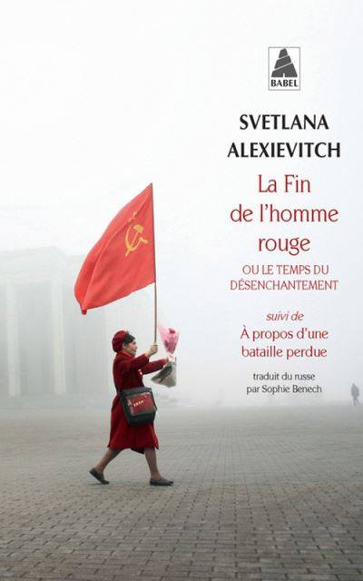
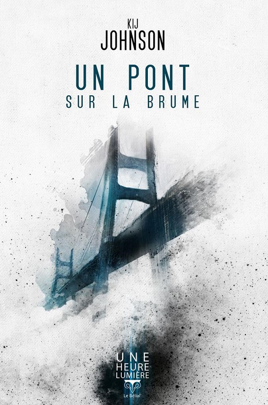
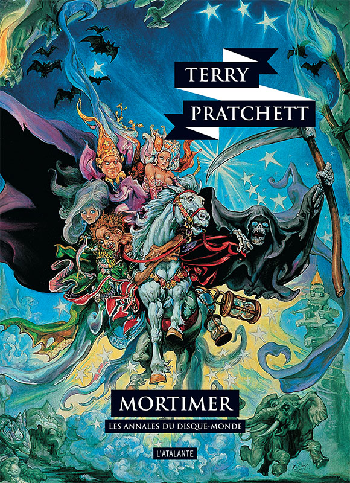
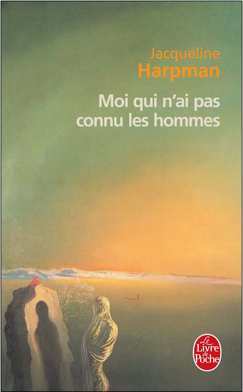

Jour 1. Outrage et rébellion - Catherine Dufour (2009) - Dans cette histoire, Catherine Dufour nous raconte la naissance aussi jouissive que douloureuse d’un mouvement punk dans une Chine du XXIVème siècle. On n’y trouve pas une narratrice unique, mais toute une série de voix, avec leur vécu propre et leur sensibilité. A nous de faire sens au milieu de ce chaos. J’ai appris bien après l’avoir lu, et adoré (c’est encore aujourd’hui un de mes livres préférés), qu’il était grandement inspiré de Please Kill Me : l’histoire non censurée du punk racontée par ses acteurs, dont le titre dit à peu près tout.
Jour 2 - La Fin de l’homme rouge - Svetlana Alexievitch (2013) - Il y a deux ans, j’ai pris ce pavé comme une claque dans la face. Svetlana Alexievitch y donne la parole aux témoins de la fin de l’Union soviétique : on y lit leur vécu, leurs pensées, leurs peurs, leur colère, leurs souvenirs, leurs espoirs. Des histoires parfois bien différentes les unes des autres et pourtant liées par un thème : comment fait-on pour gérer la fin brutale d’un monde dans lequel on a toujours vécu, un changement dont l’impact se ressent sur toutes les strates de la société ? Comment, au niveau individuel, se faire aux nouvelles règles du jeu ? Je ne suis vraiment pas prêt de l’oublier.
Jour 3 - Un pont sur la brume - Kij Johnson (2011) - C’est une histoire de pont. On peut en raconter des choses, autour d’un pont. Celui-ci est à construire, au-dessus d’un large fleuve brumeux peuplé de créatures inquiétantes. Ce court récit nous relate le parcours de l’architecte chargé de cette tâche immense : réunir, enfin, les deux rives de l’Empire. Avec son univers suffisamment étrange pour attirer l’attention, mais assez familier pour nous pas nous perdre, sans oublier les personnages touchants qui le peuplent, ce petit livre m’a beaucoup plu.
Jour 4 - Mortimer - Terry Pratchett (1987) - Lasse, en proie à des doutes existentiels, La Mort engage un jeune apprenti, Mortimer, pour se délester un peu de son travail harassant. Passée notre rencontre avec ce fantastique personnage qu’est La Mort, s’ensuit une histoire qui nous emmène sur le Disque-monde : l’univers parodique, mais surtout vraiment malin, hautement divertissant et décidément doux que Terry Pratchett a développé à travers des dizaines de romans. C’est par celui-ci que j’en ai fait la découverte, et je me plonge régulièrement dans un nouveau livre de ses Annales lorsque j’ai besoin de légèreté.
Jour 5 - Moi qui n’ai pas connu les hommes - Jacqueline Harpman (1995) - Mon histoire avec ce roman remonte à loin. Je crois l’avoir pioché dans la bibliothèque de ma maman, pour une raison trop lointaine pour que je m’en souvienne. L’impression qu’il m’a laissé, par contre, est très nette. Une fascination pour ce monde désolé, pour le parcours de ces femmes abandonnées sur une terre perdue. Comment construire du sens sur un terreau qui semble en être complètement dépourvu ? Du post-apocalyptique qui ne dit pas son nom, particulièrement réussi.
Initialement publié sur Facebook entre le 26 et le 30 avril 2020.